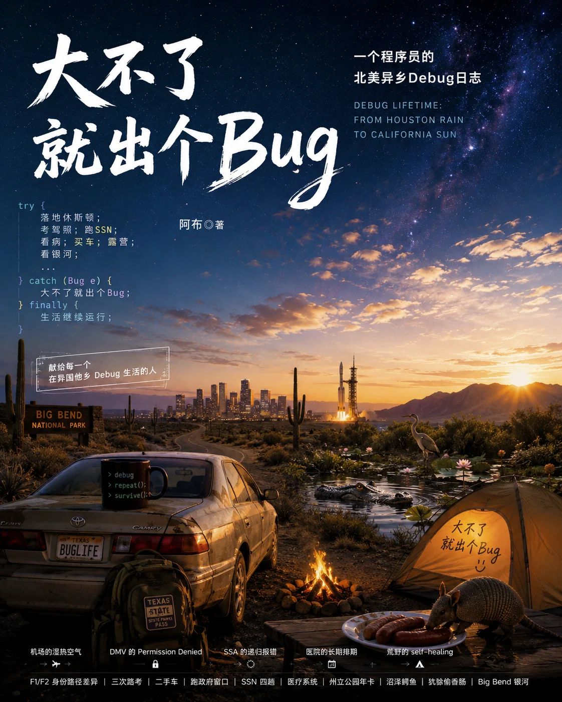
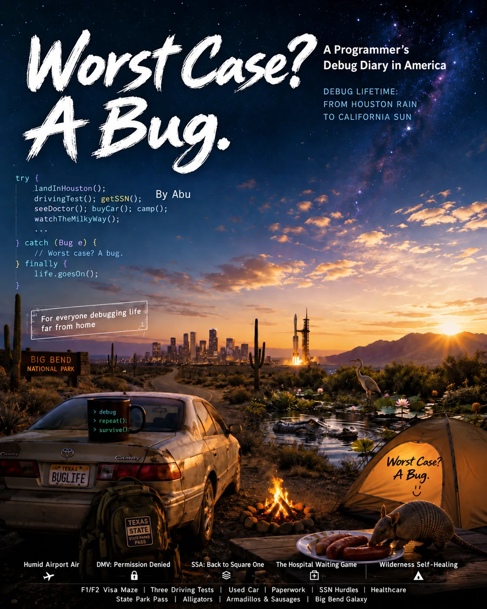

BOOK 01 / 中文散文BOOK 01 / A MEMOIR IN TRANSLATION
整理初稿 · 2026 年 10 月English translation draft · October 2026
大不了
就出个BugWorst Case,
a Bug
我在北美重启生活Restarting Our Life in North America
从德州小镇到加州阳光，我们在异乡把生活一点点重新跑通。From a small Texas town toward California sunshine, we gradually make a life together far from home.
5 卷 · 16 章 · 前言与后记 · 约 0.9 万字5 parts · 16 chapters · Preface & afterword · About 5,100 words in English
下载到阅读器Take it offline ↓一个 F2 陪读者，与 F1 队友一起，在北美的生活系统里摸索、开荒，重新找回行动能力和自我定义。An F2 accompanying spouse and her F1 partner rebuild everyday life in North America, moving through uncertainty and limited access toward a renewed ability to act and define their lives.
CONTENTS / 书中目录READING ORDER
把生活，一章一章搭起来。Rebuilding life, one chapter at a time.
生活没有说明书Life Comes Without a Manual

落地Arrival一切从零开始Beginning from zero
降落休斯顿：空气一热，我就知道生活重置了Landing in Houston: The Heat Told Me Life Had Reset
第 2 章Chapter 2F2：一个存在感很强、权限感很弱的身份F2: A Visible Status with Very Little Access
第 3 章Chapter 3第一根生活样柱：从酒店、空房子和第一顿饭开始The First Supports of Daily Life: A Hotel, an Empty Apartment and a Meal

移动Mobility先学会出门Learning to get out
清晨五点的公交：去办学习驾驶许可The Five-in-the-Morning Bus: Applying for a Learner Permit
第 5 章Chapter 5三次路考：不是我不会开，是系统没看见Three Driving Tests: Doing It Was Not Enough to Be Seen
第 6 章Chapter 6十三年的老凯美瑞：我们终于有了自己的腿A Thirteen-Year-Old Camry: Finally, Legs of Our Own
第 7 章Chapter 7车险、Title 和 Registration：自由也要先绑定系统Insurance, Title and Registration: Even Freedom Needed Paperwork

身份Identity有些门，需要时间Some doors take time
SSN 递归报错：到了第二学年，我跑了四趟 SSASSN Recursive Errors: Four Trips to the SSA in the Second Academic Year
第 9 章Chapter 9Houston, we have a problem：带伤回来的火箭Houston, We Have a Problem: The Rocket That Came Back Scarred

身体The Body真正需要修复的What needs care most
35 刀的专科门诊：我第一次听懂身体的日志A Thirty-Five-Dollar Specialist Visit: Learning to Read the Body's Log
第 11 章Chapter 11小棕瓶：美式医疗的终点在超市药房The Little Brown Bottle: Healthcare Ended at the Supermarket Pharmacy
第 12 章Chapter 12F2 的医疗开荒：预约排到明年Finding Healthcare on F2: The Next Appointment Was Next Year
第 13 章Chapter 13Whatever 医生和 PCP 法则The Whatever Doctor and the Importance of a PCP

荒野The Wild生活不止通关More than getting through
德州州立公园记：蓝帽花、鳄鱼沼泽和偷香肠的犰狳Texas State Parks: Bluebonnets, Alligator Marshes and an Armadillo After the Sausages
第 15 章Chapter 15Big Bend：床垫漏气的夜里，我看见满天银河Big Bend: A Leaking Air Mattress Beneath the Milky Way
第 16 章Chapter 16告别德州：从小镇出发，去加州Leaving Texas: From a Small Town Toward California
不是所有 Bug 都需要被修复Not Every Bug Needs Fixing
KEEP A COPY / 离线阅读KEEP A COPY / OFFLINE READING
在没有信号的地方，也能翻开。A book for places without a signal.
网页、EPUB 与 PDF 按当前语言对应同一份初稿。EPUB 适合手机与电子阅读器，可调字号；PDF 保留固定分页，适合电脑阅读和打印。The online reader, EPUB and PDF use the same draft in the selected language. EPUB offers adjustable type for phones and e-readers; PDF preserves page layout for reading and printing.